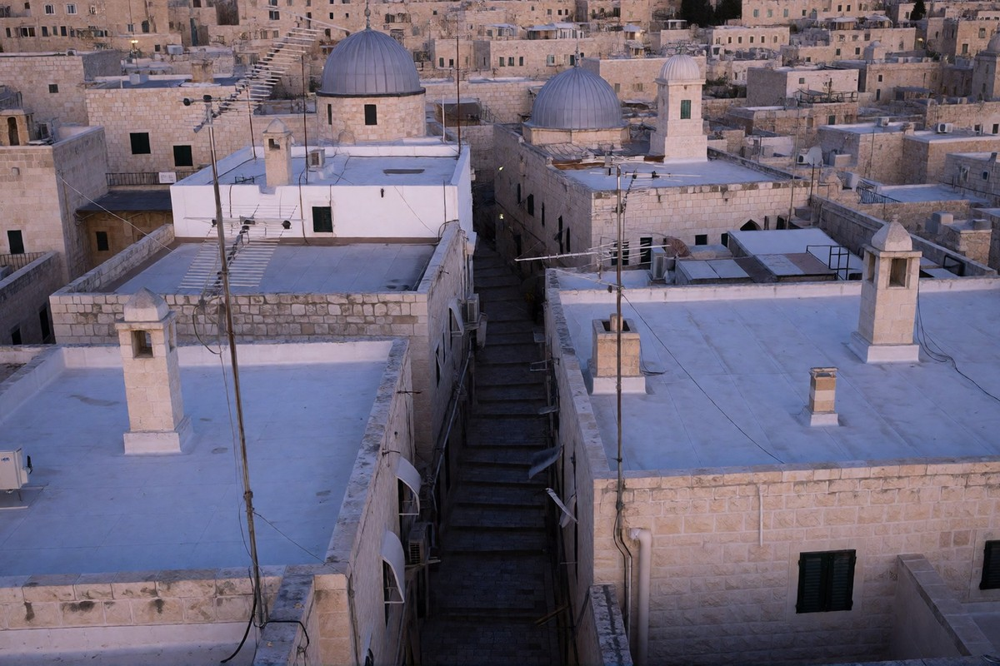

Geopolitica · 25 novembre 2026
«Difendete i vostri fratelli ebrei»: l'imam di Drancy contro l'antisemitismo

Hassen Chalghoumi lo ha detto al Jerusalem Post a Gerusalemme: un attacco contro un ebreo è un attacco contro tutti i musulmani. È una posizione che gli è già costata una denuncia per alto tradimento in Tunisia.
di Franco Zanghì
Un imam che dice ai musulmani: andate a difendere i vostri fratelli ebrei. La frase è di Hassen Chalghoumi, in un'intervista al Jerusalem Post pubblicata mercoledì 25 novembre 2026: «Se sei un buon credente, va' a difendere i tuoi fratelli ebrei. Va' a sostenerli».
Chalghoumi è un imam francese di origine tunisina, nato a Tunisi nel 1972 e naturalizzato francese nel 2005. La sua moschea è a Drancy, alle porte di Parigi, ed è presidente della Conferenza degli imam di Francia. In Francia, per le minacce di morte ricevute, si muove sotto protezione.
Ha parlato a Gerusalemme, a margine della conferenza dell'ELNET, l'organizzazione che lavora sui rapporti fra l'Europa e Israele.
Che cosa ha detto
La frase più netta è questa: «Quando c'è un attacco contro un ebreo, è un attacco contro tutti i musulmani». Gli attacchi dei musulmani contro gli ebrei, ha aggiunto, sono «haram», cioè proibiti dall'islam. E sull'antisemitismo diffuso fra i giovani musulmani: «Questo non è islam, è islamismo».
Per Chalghoumi gli ostacoli veri alla pace sono due: il regime iraniano e i Fratelli musulmani, che ha definito un pericolo e un veleno che distrugge i giovani. «Questi sono i veri ostacoli», ha detto, «non vogliono che ebrei e musulmani si avvicinino». Parlando delle basi europee dei Fratelli musulmani ha elencato i Paesi Bassi, Parigi, Bruxelles, Lisbona e Barcellona. E ha detto di sperare che il regime iraniano cada.
Il precedente del 2025, e il prezzo pagato
Non è la prima volta. Dal 6 all'11 luglio 2025 Chalghoumi aveva guidato in Israele una delegazione di imam e di responsabili di comunità musulmane europee, organizzata dall'ELNET. Il Jerusalem Post parla di circa tredici imam; Middle East Eye di quindici fra imam e leader musulmani, e aggiunge il Belgio ai Paesi di provenienza, che per le altre fonti sono Francia, Gran Bretagna, Italia e Paesi Bassi.
La delegazione aveva visitato lo Yad Vashem, il memoriale della Shoah, e i luoghi del 7 ottobre: il sito del festival Nova e il kibbutz Kfar Aza. Aveva incontrato sopravvissuti, familiari delle vittime e membri delle comunità arabo-israeliana e drusa. A riceverli, alla residenza presidenziale, era stato il presidente di Israele Isaac Herzog.
Quella visita aveva avuto un prezzo. Al-Azhar, al Cairo, la più autorevole istituzione dell'islam sunnita, aveva definito la delegazione un gruppo fuorviato e aveva dichiarato che «non rappresentano l'islam né i musulmani», parlando di tradimento dei valori religiosi e umani. Un imam olandese, Youssef Msibih, della moschea Bilal di Alkmaar, era stato sospeso dal consiglio della sua moschea. E in Tunisia un'organizzazione aveva denunciato Chalghoumi per alto tradimento, chiedendo anche che gli fosse tolta la cittadinanza tunisina.
Perché ci riguarda
Perché in quella delegazione c'erano anche imam venuti dall'Italia. E perché la domanda che pone Chalghoumi vale anche qui: chi, dentro le comunità musulmane europee, è disposto a dire in pubblico che l'odio per gli ebrei non ha niente a che fare con la fede.
Una voce musulmana che dice «difendete i vostri fratelli ebrei» vale più di molti appelli, proprio perché costa cara a chi la pronuncia. Il passaggio da guardare è se altri imam europei, anche italiani, prenderanno la stessa posizione in pubblico, o se Chalghoumi resterà una voce isolata, come sostengono i suoi critici.
Fonti
- Mathilda Heller, «Defend your Jewish brothers: Imam calls on Muslims to stand against antisemitism», The Jerusalem Post, 25 novembre 2026
- Israele.net, «Noi, ebrei e musulmani, possiamo vivere in pace» (dal Jerusalem Post), 27 novembre 2026
- Middle East Eye, «Dutch imam suspended after meeting Isaac Herzog in delegation to Israel», 8 luglio 2025
- Middle East Eye, «Tunisian group sues French-Tunisian imam for high treason over visit to Israel», 17 luglio 2025
- The New Arab, «Al-Azhar slams European imams' visit to Israel, says they do not represent Muslims», 11 luglio 2025
- The Times of Israel, «Herzog welcomes delegation of imams from Europe at President's Residence», 7 luglio 2025
Le fonti non coincidono sul numero dei componenti della delegazione del luglio 2025: tredici secondo il Jerusalem Post, quindici secondo Middle East Eye, «una dozzina» secondo il Times of Israel; e non tutti erano imam. Middle East Eye include il Belgio fra i Paesi di provenienza, le altre fonti no. Le posizioni riportate in questo articolo sono di Hassen Chalghoumi e vanno lette come sue.